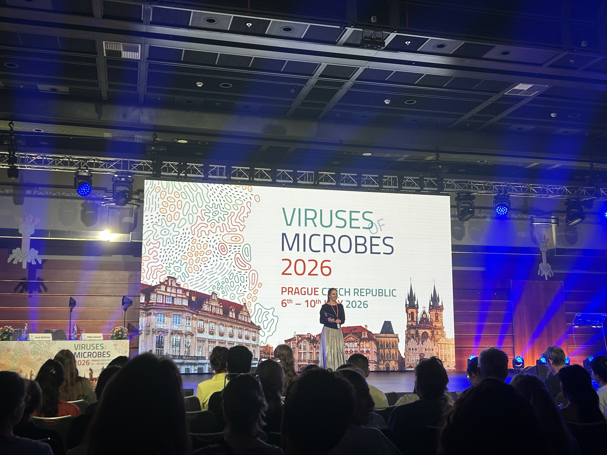
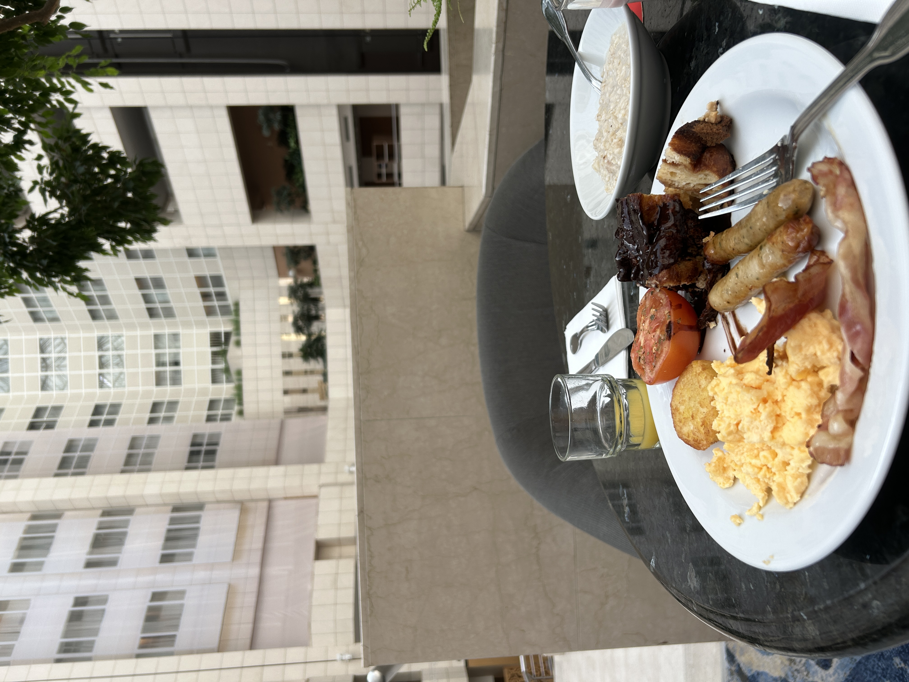
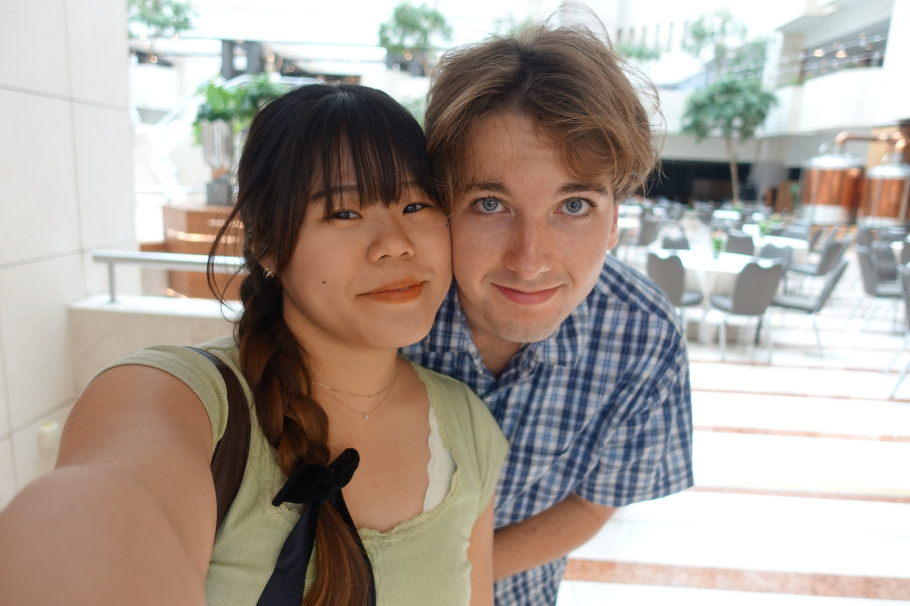

This past summer, I was given the opportunity to present a poster on my research into Vibrio coralliilyticus bacteriophage biology at the Viruses of Microbes Conference in Prague, Czech Republic.
The conference spanned an entire week, with scientists from around the globe arriving on Sunday and leaving on Saturday. During this time, we were hosted at the Hilton Prague Atrium overlooking the Vltava River. My wife flew in from Germany to join me for the week. We were offered complimentary breakfast and all conference participants were also served lunch.
My mornings and early afternoons were spent attending presentations on cutting-edge research and networking with other scientists from countries as diverse as France, Poland, Germany, Israel, Japan, and China. However, I had considerable time in the late afternoons and evenings to explore the country with my wife. It was our first time in Europe and my second time leaving the country (the first being my trip to Japan, right before my wife and I got married).
This website is my memoir of the experience and the places I was able to visit.

